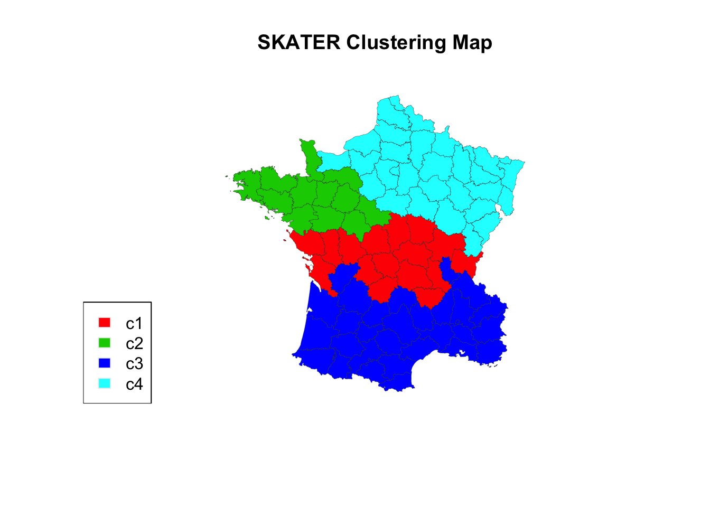

Chapter 16 Spatial Clustering
Update: Spatial Weights Tutorials have been uploaded to the Tutorials site! Spatial autocorrelation tutorials will likely be posted the week after Thanksgiving, please use the rgeoda documentation in the meantime or reach out to Angela with questions.
We’ll finish up this quarter’s workshop with a brief overview of spatial clustering in R.
16.1 Spatial Clustering in rgeoda
Let’s first do it in rgeoda. This is based off of the rgeoda spatial clustering documentation.
Load packages:
library(rgeoda)
library(sf)
library(geodaData)Load guerry data:
guerry_sf <- geodaData::guerryDo you remember how to convert an sf object into a geoda object?
guerry <- sf_to_geoda(guerry_sf, with_table = TRUE)We need to get the data into a format that is compatible with the skater() function in rgeoda, aka a list of numeric vectors of the variables we want cluster on:
data <- list(guerry$table$Crm_prs, guerry$table$Crm_prp, guerry$table$Litercy, guerry$table$Donatns, guerry$table$Infants, guerry$table$Suicids)
data## [[1]]
## [1] 28870 26226 26747 12935 17488 9474 35203 6173 19602 15647 8236
## [12] 13409 17577 18070 24964 18712 21934 15262 32256 28607 37014 21585
## [23] 11560 13396 14795 21368 29872 13115 18642 18642 24096 12814 22138
## [34] 32404 19131 18785 26221 17687 21292 27491 16170 19314 17722 5883
## [45] 22969 7710 29692 31078 15602 26231 28331 26674 24507 23316 12153
## [56] 25087 26740 28180 28329 23101 17256 16722 12223 6728 12309 7343
## [67] 18793 22339 28391 33913 13945 18355 22201 12477 18400 33592 13019
## [78] 14790 13145 13576 20827 15010 16256 18835 18006
##
## [[2]]
## [1] 15890 5521 7925 7289 8174 10263 8847 9597 4086 10431 6731
## [12] 5291 4500 11645 13018 5357 10503 12949 9159 7050 20235 10237
## [23] 5914 7759 4774 4016 6842 7990 7204 10486 7423 10954 6524
## [34] 7624 6909 8326 8059 6170 6017 12665 18043 9392 5042 9049
## [45] 8943 5990 8520 7424 4950 9539 9198 6831 9190 7940 4529
## [56] 8236 6175 6659 8248 4040 12141 8533 9797 7632 4920 4915
## [67] 4504 7770 10708 8294 1368 2906 5786 3879 6863 7144 6241
## [78] 8680 9572 5731 7566 4710 6402 9044 6516
##
## [[3]]
## [1] 37 51 13 46 69 27 67 18 59 34 31 38 52 31 36 39 13 12 60 16 23 18 73
## [24] 42 51 54 15 40 31 38 40 45 25 17 27 29 73 28 27 29 21 24 42 24 31 27
## [47] 23 43 63 72 19 68 74 14 57 20 45 54 45 49 19 47 53 31 62 71 45 59 32
## [70] 30 71 43 54 56 41 44 20 25 23 37 28 25 13 62 47
##
## [[4]]
## [1] 5098 8901 10973 2733 6962 3188 6400 3542 3608 2582 3211
## [12] 2314 27830 4093 13602 13254 9561 14993 2540 10387 10997 4687
## [23] 3436 2829 11712 4553 23945 3048 2286 2848 5076 1680 7686
## [34] 11315 7254 4077 3012 12059 5626 3446 2746 8310 4753 5194
## [45] 4432 2040 4410 5179 3963 4013 2107 3912 4196 14739 9515
## [56] 10452 6092 5501 9242 5740 5963 3299 6001 11644 14472 6001
## [67] 1983 11701 3710 3357 4204 7245 5303 4007 16956 4964 3449
## [78] 4558 2449 1246 14035 8922 13817 4040 4276
##
## [[5]]
## [1] 33120 14572 17044 23018 23076 42117 16106 22916 18642 20225 21981
## [12] 9325 8983 15335 19454 23999 23574 19330 15599 36098 14363 21375
## [23] 12512 16348 16039 14475 28392 28726 15378 15250 10676 21346 40736
## [34] 20046 16601 12236 20384 15302 13364 29605 31017 14097 9986 20383
## [45] 17681 25157 18708 14281 11267 17507 18544 12355 17333 31754 13877
## [56] 19747 8926 18021 20852 10575 22948 12393 12125 15167 14356 14783
## [67] 3910 11850 20442 10779 2660 7506 16324 16303 25461 12447 29305
## [78] 23771 14800 17239 62486 35224 19940 14978 16616
##
## [[6]]
## [1] 35039 12831 114121 14238 16171 52547 26198 123625 10989 66498
## [11] 116671 8107 31807 87338 25720 16798 19497 47480 16128 75056
## [21] 77823 36024 40690 23816 13493 15015 25143 18292 56140 61510
## [31] 19220 30869 45180 25014 15272 36275 34476 35375 14417 71364
## [41] 163241 27289 11813 48783 38501 11092 33358 55564 8334 19586
## [51] 28331 15652 13463 34196 25572 29381 13851 5994 34069 15400
## [61] 78148 65995 148039 37843 18623 21233 17003 39714 22184 29280
## [71] 3632 9523 7315 3460 24533 12836 68980 48317 13380 19024
## [81] 67963 21851 33497 33029 12789Make our queen weights from before:
queen_w <- queen_weights(guerry)Now, we use the SKATER function. The first argument is the number of clusters we want, the second is the weights we created, and the third is the list of numeric vectors of the variables we want to cluster on:
?skater## Help on topic 'skater' was found in the following packages:
##
## Package Library
## rgeoda /Library/Frameworks/R.framework/Versions/3.6/Resources/library
## spdep /Library/Frameworks/R.framework/Versions/3.6/Resources/library
##
##
## Using the first match ...Run it, and take a look at the output:
guerry_clusters <- skater(4, queen_w, data)
guerry_clusters## [[1]]
## [1] 15 74 16 55 60 39 68 33 17 82 81 0 2 40 20 80
##
## [[2]]
## [1] 46 50 34 38 69 47 58 19 32 41 53 26
##
## [[3]]
## [1] 23 79 3 29 61 21 44 11 28 13 30 35 76 77 43 9 27 45 31 78 4 10 66
## [24] 37 5 14 7 63 62
##
## [[4]]
## [1] 49 52 72 84 8 57 56 59 42 1 25 51 48 54 64 75 18 83 73 36 24 71 6
## [24] 67 65 70 22 12This returns a list, where the length is the number of clusters, and the numbers are the indexes of the observations that are in each cluster.
You could then create a map in base R - note, this is taken from the rgeoda documentation, and I don’t necessarily support this entirely.
# Get some colors for each clusters
skater_colors <- palette()[2:5]
skater_labels <- c("c1","c2","c3","c4")
# Assign a color for each observation
colors <- rep("#000000", queen_w$num_obs)
for (i in 1:4) {
for (j in guerry_clusters[i]) {
colors[j+1] <- skater_colors[i]
}
}
# plot
plot(st_geometry(guerry_sf), col=colors, border = "#333333", lwd=0.2)
title(main = "SKATER Clustering Map")
legend('bottomleft', legend = skater_labels, fill = skater_colors, border = "#eeeeee")
16.2 Clustering analysis with other R packages
I can’t cover everything in this workshop, but notes on PCA and clustering with non-rgeoda R packages can be found on the Tutorials page of the Spatial Analysis in R site.